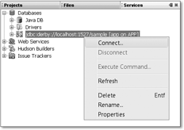
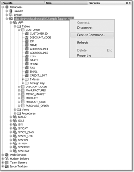
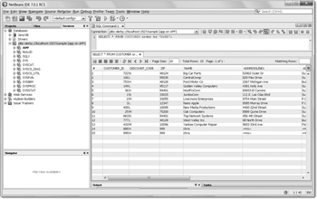
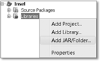
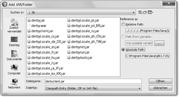

17.5 Eine Beispielabfrage
17.5.1 Schritte zur Datenbankabfrage
Wir wollen kurz die Schritte skizzieren, die für einen Zugriff auf eine relationale Datenbank mit JDBC erforderlich sind:
- Einbinden der JDBC-Datenbanktreiber in den Klassenpfad
- unter Umständen Anmelden der Treiberklassen
- Verbindung zur Datenbank aufbauen
- eine SQL-Anweisung erzeugen
- SQL-Anweisung ausführen
- das Ergebnis der Anweisung holen, bei Ergebnismengen über diese iterieren
- die Datenbankverbindung schließen
Wir beschränken uns im Folgenden auf die Verbindung zum freien Datenbanksystem HSQLDB.
17.5.2 Ein Client für die HSQLDB-Datenbank
Ein Beispiel soll zu Beginn die Programmkonzepte für JDBC veranschaulichen, bevor wir im Folgenden das Java-Programm weiter sezieren. Das Programm in der Klasse FirstSqlAccess nutzt die Datenbank TutegoDB, die sich im Suchpfad befinden muss; wir können ebenso absolute Pfade bei HSQLDB angeben, etwa C:/TutegoDB. Bei der Parametrisierung »jdbc:hsqldb:file:...« von HSQLDB liest die Datenbank beim ersten Start die Daten aus der Datei ein, verwaltet sie im Speicher und schreibt sie am Ende des Programms wieder in eine Datei zurück.
Da wir die Datenbank schon früher mit Demo-Daten gefüllt haben, lässt sich jetzt eine SQL-SELECT-Abfrage absetzen:
Listing 17.1: com/tutego/insel/jdbc/FirstSqlAccess.java
package com.tutego.insel.jdbc;
import java.sql.*;
public class FirstSqlAccess
{
public static void main( String[] args )
{
try
{
Class.forName( "org.hsqldb.jdbcDriver" );
}
catch ( ClassNotFoundException e )
{
System.err.println( "Keine Treiber-Klasse!" );
return;
}
Connection con = null;
try
{
con = DriverManager.getConnection(
"jdbc:hsqldb:file:TutegoDB;shutdown=true", "sa", "" );
Statement stmt = con.createStatement();
// stmt.executeUpdate( "INSERT INTO CUSTOMER " +
// "VALUES(50,'Christian','Ullenboom','Immengarten 6','Hannover')" );
ResultSet rs = stmt.executeQuery( "SELECT * FROM Customer" );
while ( rs.next() )
System.out.printf( "%s, %s %s%n", rs.getString(1),
rs.getString(2), rs.getString(3) );
rs.close();
stmt.close();
}
catch ( SQLException e )
{
e.printStackTrace();
}
finally
{
if ( con != null )
try { con.close(); } catch ( SQLException e ) { e.printStackTrace(); }
}
}
}
Dem Beispiel ist in diesem Status schon die aufwändige Fehlerbehandlung anzusehen. Das Schließen vom ResultSet und Statement ist vereinfacht, aber okay, weil das finally auf jeden Fall die Connection schließt. Ab Java 7 kann auch try-mit-Ressourcen die Verbindung automatisch schließen.
17.5.3 Datenbankbrowser und eine Beispielabfrage unter NetBeans
Wer mit NetBeans arbeitet, der kann einfach mit der ab Java 6 mitgelieferten Datenbank JavaDB arbeiten, denn NetBeans bringt eine Beispieldatenbank für Java DB mit. Im Folgenden soll
- die Beispieldatenbank gestartet,
- die Datenbank mit der Browser untersucht und
- ein Java-Programm geschrieben werden, das diese Datenbank anspricht.
Beispieldatenbank starten
Ist NetBeans gestartet, wählen wir im Menü Window • Services. Links kommt in der Darstellung ein Punkt Databases hinzu, wobei unser Interesse der Beispieldatenbank dient, zu der wir mit Connect über das Kontextmenü eine Verbindung aufbauen wollen.
Abbildung 17.8: Demo-Datenbank starten
In der Ausgabe ist zu erkennen, dass die Datenbank nun gestartet und bereit für Verbindungen ist.

Abbildung 17.9: Ausgabe nach dem Start der Datenbank
SQL-Anweisungen absetzen
Links ist anschließend der Baum mit vielen Informationen gefüllt, und alle Tabelleninformationen sind zugänglich. Mit der rechten Maustaste und dem Kontextmenü lassen sich anschließend SQL-Anweisungen über Execute Command... an die Datenbank absetzen.
Abbildung 17.10: SQL-Abfragen starten
Es öffnet sich ein SQL-Editor, der Tastaturvervollständigung beherrscht und sogar in die Datenbank schaut, um Tabellen und Spaltennamen korrekt zu vervollständigen.
Abbildung 17.11: Ergebnis einer SQL-Abfrage
JDBC-Beispiel
Das JDBC-Beispiel von eben können wir leicht auf die NetBeans-Datenbank übertragen. Drei Dinge müssen wir anpassen:
- Der Treiber muss im Klassenpfad stehen.
- Die Treiberklasse ist org.apache.derby.jdbc.ClientDriver. Das explizite Laden kann aber entfallen, da Java einen JDBC 4-Treiber selbstständig findet, wenn er im Klassenpfad steht.
- Die Datenbank-URL ist jdbc:derby://localhost:1527/sample.
Die letzten beiden Dinge sind schnell im Quellcode angepasst. Um den Treiber in den Klassenpfad zu setzen, wählen wir links im Projekt bei Libraries das Kontextmenü und dann Add Jar/Folder...
Abbildung 17.12: Java-Archive hinzufügen
Aus dem JDK-Installationsverzeichnis unter db/lib wählen wir derbyclient.jar.
Abbildung 17.13: »derbyclient.jar« auswählen
Öffnen fügt das Jar-Archiv hinzu.
Wir wollen das SELECT noch etwas anpassen, und dann folgt:
Listing 17.2: com/tutego/insel/jdbc/FirstSqlAccess.java
package com.tutego.insel.jdbc;
import java.sql.*;
public class SecondSqlAccess
{
public static void main( String[] args )
{
Connection con = null;
try
{
con = DriverManager.getConnection( "jdbc:derby://localhost:1527/sample",
"app", "app" );
Statement stmt = con.createStatement();
ResultSet rs = stmt.executeQuery(
"SELECT NAME, ADDRESSLINE1, PHONE FROM Customer" );
while ( rs.next() )
System.out.printf( "%s, %s %s%n", rs.getString(1),
rs.getString(2), rs.getString(3) );
rs.close();
stmt.close();
}
catch ( SQLException e )
{
e.printStackTrace();
}
finally
{
if ( con != null )
try { con.close(); } catch ( SQLException e ) { e.printStackTrace(); }
}
}
}
Ihr Kommentar
Wie hat Ihnen das <openbook> gefallen? Wir freuen uns immer über Ihre freundlichen und kritischen Rückmeldungen.
 Jetzt bestellen
Jetzt bestellen


{kind=link}
{kind=link}
{kind=link}
{kind=link}
{kind=link}